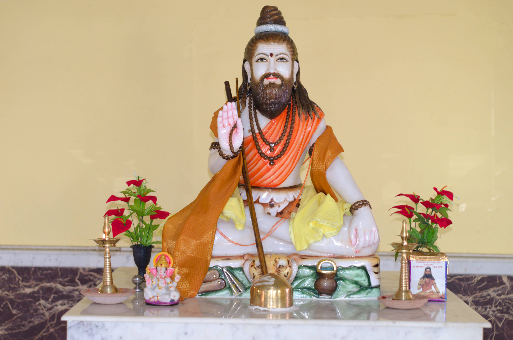

Halwai is a caste of Vaishya varna (community) with traditional primary occupation related to confectionery and sweet-making. The name is derived the word Halwa. Baba Ganinath Govindji is the kul Guru (school) of Halwai caste.
The Halwai are known by different names in each state. They are known as Mithaiha (meaning sweet) in Madhya Pradesh and have the surname Aggarwal. In eastern Bihar, they are called Madhesia and Vaisya and their surnames are Sah, Sahu, Saw and Gupta. In Uttar Pradesh they are known as Yogyaseni, Modanwal, Halwai, and Gupta. In Punjab they are known as Kamboj and Arora. In Orissa, the Halwai are known as Guria (jaggery) while in West Bengal they are known as Mayara, meaning confectioner.
In Uttar Pradesh the Halwai have nine subgroups namely: Modansevi or Modanseni, Kanyakubja, Yogyasevi or Yogyaseni, Jaunpuri, Madhesia, Kanbo, Kaithiya, Nagari, Rawatpuriya and Badshahi.
In Bihar there are two sub castes Madhesia and Kannaujia.